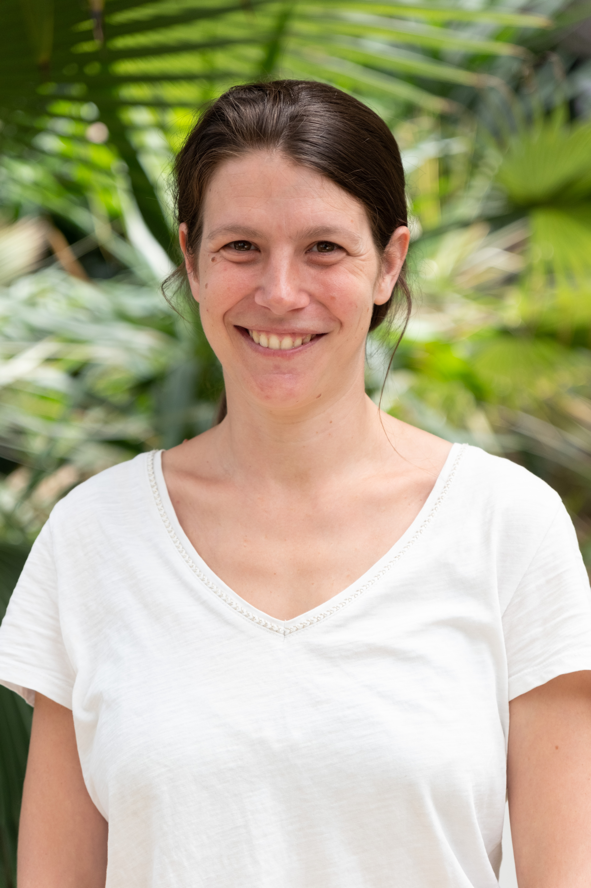
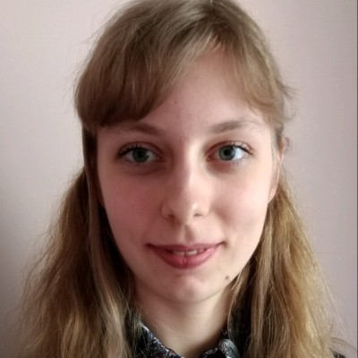
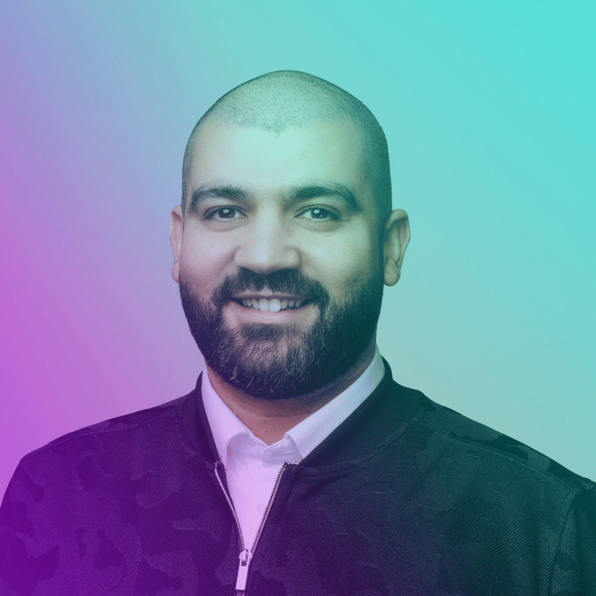
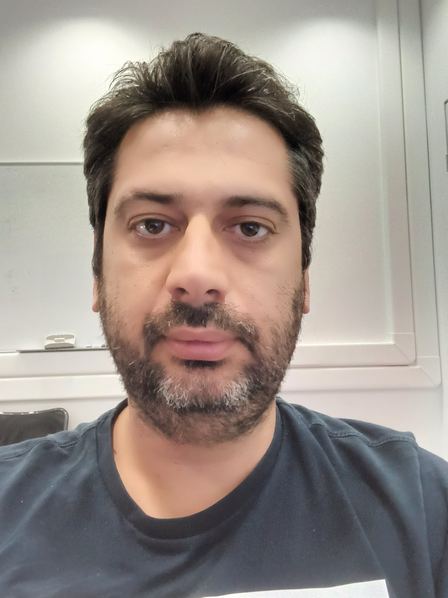
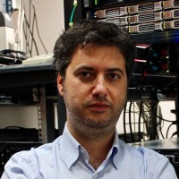

| Header | Data with Icon |
|---|
DaFab is a project funded by ESA under the grant agreement 101128693 — HORIZON-EUSPA-2022-SPACE
DaFab is proud to be supported by the AI for SCIENCE 2025 for its summer school on Earth Observation data and AI. During 4 days we will cover topic such as AI models for satellite images, Kubernetes workflow, metadata generation and management and performance analysis.
During 4 days, morning will be devoted to lectures and lessons and afternoon to hands-on session provided by the DaFab Consortium.Lecturers selected for the Summer School are coming from prestigious organization all over across Europe, coming from both Academia and the industry. Don't miss the opportunity to exchange with seasoned professional.
The program is organized around 4 days: one dedicated to AI and EO, the second to AI and Performance, the third day to Workflow management and the last day to Earth Observation and data management.
Hanson session will provide access on leadership class supercomputers in order to test, try and learn on reals systems.
DaFab summer school is organised in 4 days, with a 3h lectures in the morning and a 2h session of coding and hands-on during the afternoon.

What is Earth Observation remote sensing? What are the key characteristics of EO data? What are its main fields of application? We will also introduce a concrete EO program called Copernicus.

Evolution of AI technologies. Era of Foundation Models. Foundation Models in geoscience & datasets used for training. Popular Python frameworks for working with Earth Observation data. European projects in EO and AI.
Introduction to STAC (SpatioTemporal Asset Catalogs) specification for discovering geospatial information. Examples of usage Python libraries for efficient data processing.
What type of applications does Thales Alenia Space develop using Earth Observation data enhanced by artificial intelligence algorithms? Discover how AI-driven EO solutions are shaping innovative applications in various fields.

AI factories must be designed to handle the most demanding stages of the machine learning lifecycle—data ingestion, preprocessing, and large-scale model training. These early phases place extreme demands on infrastructure, from GPU-accelerated supercomputers and high-throughput storage to low-latency interconnects and distributed data pipelines. This session explores how to architect and optimize dynamic, high-performance environments capable of processing massive datasets, orchestrating parallel training jobs, and scaling resources efficiently. Participants will gain practical insights into overcoming data bottlenecks, maximizing hardware utilization, and integrating HPC and cloud resources to deliver speed, scalability, and cost-efficiency at the start of the AI production chain.
AI development begins with workloads that demand extreme performance. Training large language models and generative AI systems requires GPU acceleration, low-latency interconnects, and scalable storage to handle massive datasets. This session explores how Gcore’s GPU Cloud—powered by NVIDIA A100, H100, and H200 instances with InfiniBand networking—delivers HPC-grade capabilities in a flexible, cloud-native environment. We will look at distributed training strategies, mixed precision techniques, and orchestration tools that transform supercloud-class resources into elastic infrastructures for enterprise AI.
Once AI models are trained, the challenge shifts to delivering them as fast, reliable, and cost-effective services. Inference workloads require entirely different priorities—low latency, high availability, and seamless integration into production systems—often through containerized microservices, auto-scaling cloud platforms, or edge computing. This session examines how to bridge the performance–agility gap, from compressing and optimizing models for deployment to building resilient MLOps pipelines for monitoring, retraining, and governance. Real-world patterns and case studies will illustrate how to move from HPC-heavy training to lightweight, scalable inference while maintaining cost control, compliance, and operational excellence.
AI is no longer confined to research or centralized datacenters, but it increasingly powers real-time, interactive experiences where every millisecond counts. This session focuses on Gcore’s Everywhere Inference platform, which brings models closer to end users, enabling ultra-low latency, reducing unnecessary backhaul traffic, and supporting regional data handling requirements. Gcore has extended its global edge infrastructure with GPU-powered Points of Presence worldwide, creating a platform designed for workloads where speed and locality make a measurable difference. With Kubernetes integration, autoscaling, and support for hybrid deployments, enterprises can deploy optimized inference services that adapt in real time to diverse workloads. From finance to conversational AI, fraud detection and live content personalization, to immersive gaming and AR/VR, inference at the edge delivers tangible improvements in performance and user experience.
o Overview of the HPC cluster architecture (login nodes, compute nodes, GPU nodes) o SLURM basics: job submission, partitions, scheduling policies o Storage layout and data transfer tips
o htop, nvidia-smi, ibstat for InfiniBand, iostat for disk I/O o Brief on nvtop or similar GPU monitoring tools o How to interpret load, memory, and network usage
o Launch a minimal LLM training job (small dataset, reduced parameters) o Show SLURM job submission (sbatch), log checking (squeue, sacct) o Walk through model directory structure and outputs
o Increase dataset/model size and GPU count o Demonstrate distributed training (PyTorch DDP, DeepSpeed, or Megatron-LM) o Monitor scaling behavior and GPU utilization in real-time
o Detect bottlenecks (GPU idle time, I/O wait, network congestion) o Adjust batch size, precision (FP32 vs FP16), and parallelism strategies o Quick discussion: trade-offs between speed and accuracy
o K8s architecture: master, worker nodes, pods, services, ingress o Overview of deployment options: cloud K8s, on-prem, hybrid o Brief on container images and registries
o kubectl top nodes/pods for resource monitoring o Logs (kubectl logs), kubectl describe for debugging o K8s dashboard or Lens for visual inspection
o Deploy model as a single replica pod with REST API (FastAPI/Flask) o Expose via NodePort or port-forwarding o Test with a sample query
o Scale replicas using kubectl scale or HPA (Horizontal Pod Autoscaler) o Demonstrate load testing (e.g., hey or ab command) o Show autoscaling behavior under increasing load
o Identify bottlenecks: CPU/GPU constraints, network latency o Optimize container startup, model loading time, batch inference o Discuss cost/performance trade-offs in scaling
o Take the trained model from HPC output o Package it into a Docker image o Push image to registry for K8s deployment
o Teams run the model at scale and optimize throughput & latency o Compare scaling behavior between HPC training and K8s inference o Introduce optional constraints (cost cap, latency target)
o Recap performance/agility lessons from lecture o Share best practices cheat-sheet for HPC and K8s operations o Q&+A + feedback

Containers are now the standard for application deployment. By packaging an application's code and all its dependencies into a single, isolated unit, they ensure consistent behavior across any environment. This makes applications portable and much easier to develop and share. This session will introduce the technology and present the reason of its ubiquitous success as well as the challenges remaining to be addressed

Orchestration is essential for managing containers at scale. Without it, manually deploying and scaling applications quickly becomes unmanageable. Kubernetes automates these tasks, handling everything from load balancing to self-healing, so your applications are always available. Orchestration is the fundamental concept to build a service architecture out of a set of individual containers
A workflow is a sequence of computational steps. It structures complex processes where the output of one step becomes the input for the next. This is fundamental for data processing and machine learning, making these pipelines repeatable, transparent, and scalable. This session will present the key concept the main pitfalls and the most relevant technologies to implement a workflow.
Argo is a suite of tools for building and managing workflows directly on Kubernetes. Argo Workflows allows you to define complex, multi-step pipelines natively within your cluster. It's an ideal technology for running large-scale data and machine learning tasks. This session is the concluing stage of the morning session where after presentation of the individual containers, the need to organize and share resources and orchestration, a fully operating workflow can be implemented and deployed.
access to an HPC Cluster will be provided by DaFab
The hands-on session will start with Docker containerization for packaging and managing applications in reproducible environments, followed by Kubernetes fundamentals for orchestrating and scaling workloads. The session will also introduce Knot a novel open-source orchestrator developed by FORTH harnessing both Kubernetes workflow and Slurm the HPC resource manager.
access to an HPC Cluster will be provided by DaFab
Participants will explore further workflow design principles, with a deep dive into Argo Workflows for managing complex, automated pipelines and the way Argo and knot can interoperate to provide seamless workflow deployment on different infrastructures, either cloud based on HPC.
There is an important on-going evolution of the Earth Observation data market. Originally the data market was driven by data acquisition, data acquisition cost and complexity. The Earth Observation community has been extremely successful in its effort to democratize data acquisition, as a result the community is drowning in data and starving for insight. The bottleneck is not satellites or sensors—it's data infrastructure. In this talk we will discuss this on-going evolution and the key data infrastructure technologies required to address this problem specifically in the time of AI.
In this presentation we will present the traditional pitfall in data logistic, from management to exploitation. We will introduce some useful metric to assess the scalability and the relevance of a data infrastructure
TBA
In this presentation we will review suitable tools and methodology to observe I/O performance and tune workload to suppress potential data bottleneck. This session is an introduction of the hands-on tutorial in the afternoon
to be detailed
to be detailed
DaFab is a European project sponsored by ESA with a focus on applying AI technique to Earth Observation data. As we've observed the limited offer in terms of interdisciplinary event in Europe, we've decided to set-up this summer school! The summer school has been organized by the DaFab consortium as a whole, nevertheless, five members are specifically involved in the organization.